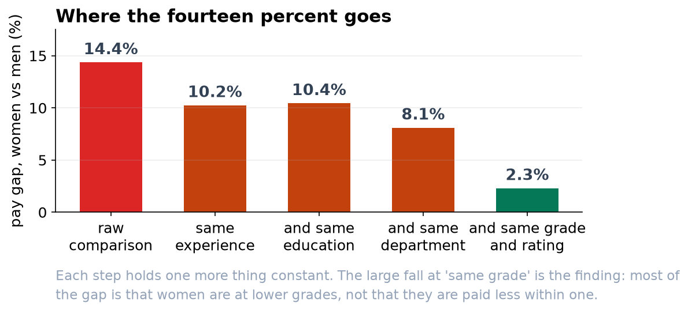
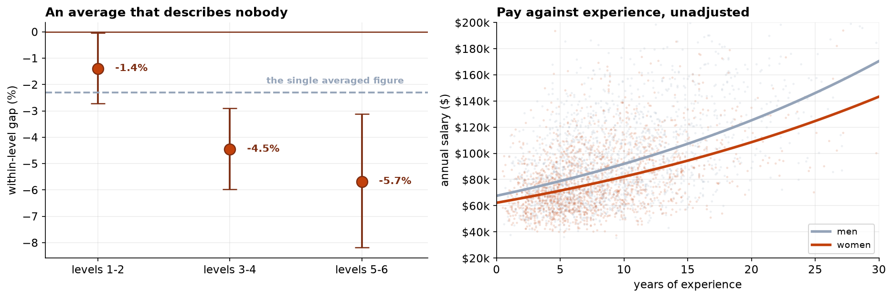

Multiple Regression Analysis of Gender Pay Differentials, with Explicit Treatment of a Post-Assignment Control
A specification-ladder analysis of log pay, a collinearity assessment, a separate model of grade attainment, and an interaction across job levels.
Objective. To estimate gender differentials in compensation, distinguishing the aggregate workforce differential from the differential conditional on grade, and to determine whether grade may properly be treated as a control. Methods. Log annual salary was regressed on a gender indicator with controls entered sequentially: experience, education, department, performance rating with a missingness indicator, and finally job level. Variance inflation factors were computed for the career-progression variables and the consequences of collinearity examined directly. Grade attainment was modeled separately by logistic regression on the same covariates excluding grade. An interaction between gender and grade group tested homogeneity of the conditional differential. Results. The unadjusted differential was −14.36%. Sequential adjustment gave −10.25% (experience), −10.44% (education), −8.10% (department), −8.10% (performance) and −2.31% (95% CI −3.08% to −1.53%) on adding job level, with R² rising from 0.468 to 0.875. The odds ratio for women attaining grade 4 or above was 0.569 (95% CI 0.482 to 0.671, p = 2.4 × 10⁻¹¹). The conditional differential varied significantly across grades (p = 0.0012), from −1.39% at grades 1–2 to −5.68% at grades 5–6. Conclusion. Job level is a post-assignment variable materially associated with gender. Conditioning on it estimates the within-grade differential and removes the between-grade component. Both should be reported, together with the attainment model.
1. Data and exclusions
| Stage | n | Note |
|---|---|---|
| HRIS export | 3,648 | Extract executed twice |
| Deduplicated | 3,600 | One record per employee |
| Non-zero salary | 3,591 | Nine zero values are payroll errors |
| Experience known | 3,569 | Twenty-two sentinel values of −1 voided |
| Analysis sample | 3,569 | 47.0% women |
Sixty-nine employees had no performance rating on file. These were retained by median imputation with an accompanying missingness indicator rather than by listwise deletion. Employees without a recent review are unlikely to be exchangeable with those who have one, and deletion would redefine the estimand without announcement. The indicator permits the model to absorb any systematic difference and makes the imputation visible in the output.
2. Specification
The outcome is the natural logarithm of annual base salary, so coefficients approximate proportional differences. Controls are entered sequentially rather than simultaneously, because the trajectory of the coefficient across specifications is itself the substantive result and is in any case reconstructible by any party with access to the data.
| Specification | Gender coefficient | Approx. % | 95% CI | R² |
|---|---|---|---|---|
| Unadjusted | −0.1550 | −14.36% | — | — |
| + experience | −0.1081 | −10.25% | [−11.92%, −8.55%] | 0.261 |
| + education | −0.1102 | −10.44% | [−12.05%, −8.80%] | 0.309 |
| + department | −0.0845 | −8.10% | [−9.64%, −6.54%] | 0.415 |
| + performance | −0.0845 | −8.10% | [−9.58%, −6.61%] | 0.468 |
| + job level | −0.0234 | −2.31% | [−3.08%, −1.53%] | 0.875 |
Performance rating leaves the coefficient unchanged to four decimal places, indicating no material difference in rating distributions by gender. This is reported because differential performance is the most frequently advanced alternative explanation and is not supported here.

3. Collinearity
Age, experience and job level are alternative measures of career progression. Age and experience correlate at 0.829.
| Variable | VIF, all four | VIF, age omitted |
|---|---|---|
| Age | 3.21 | — |
| Experience | 3.45 | 1.22 |
| Job level | 1.29 | 1.29 |
| Performance | 1.07 | 1.07 |
| Model | Experience | Age | Gender coefficient |
|---|---|---|---|
| Experience only | +0.01060 (SE 0.00043) | — | −0.0234 (SE 0.0040) |
| Age only | — | +0.00705 (SE 0.00036) | −0.0273 (SE 0.0041) |
| Both | +0.01013 (SE 0.00072) | +0.00048 (p = 0.41) | −0.0234 (SE 0.0040) |
Including both inflates the standard error on experience by 67% and renders age individually insignificant, while leaving the coefficient of interest numerically unchanged. This is the general result: collinearity degrades inference on the collinear regressors and is inconsequential for orthogonal parameters. Where the collinear variables are nuisance controls rather than targets of estimation, elevated VIFs are a matter of parsimony and interpretation rather than of validity. Experience is retained in preference to age as the variable to which the organization's stated pay policy refers.
4. Job level as a post-assignment variable
Job level accounts for a reduction of 5.79 percentage points in the estimated differential and raises R² from 0.468 to 0.875. Before accepting the conditional estimate, it is necessary to establish whether grade is a pre-assignment characteristic or an organizational decision that may itself embody differential treatment.
| Job level | Share of women (%) | Share of men (%) |
|---|---|---|
| 1 | 31.7 | 20.8 |
| 2 | 26.4 | 21.9 |
| 3 | 19.0 | 20.9 |
| 4 | 13.2 | 17.4 |
| 5 | 7.0 | 12.8 |
| 6 | 2.6 | 6.2 |
A logistic regression of attainment of grade 4 or above on gender, experience, education, performance and department returns an odds ratio for women of 0.569 (95% CI 0.482 to 0.671, p = 2.4 × 10⁻¹¹). Grade is therefore strongly associated with gender conditional on the observed determinants of advancement.
Where a control is a consequence of the exposure, conditioning on it estimates the controlled direct effect and removes the component transmitted through that variable. The regression output is indistinguishable from the case in which the control is a genuine confounder. The distinction is not resolvable from model fit and must be argued from the substantive process, which here is documented: grade is assigned by the organization under review.
5. Heterogeneity of the within-grade differential
| Grade group | Conditional differential | Approx. % |
|---|---|---|
| 1 to 2 | −0.0140 | −1.39% |
| 3 to 4 | −0.0456 | −4.45% |
| 5 to 6 | −0.0585 | −5.68% |
The pooled conditional estimate of −2.31% is an average over a differential that increases monotonically with seniority and is approximately four times larger at the top of the structure than at the bottom. Reporting the pooled figure alone would misstate the position at both ends of the distribution.

6. Diagnostics
| Diagnostic | Value | Assessment |
|---|---|---|
| Residual standard deviation | 0.1161 | — |
| Residual skewness | +0.050 | Symmetric |
| Breusch-Pagan | p = 0.445 | No evidence of heteroskedasticity |
| Maximum Cook's distance | 0.0070 | No influential observations |
One hundred and seventy observations exceed the 4/n criterion. This is uninformative at this sample size: the criterion identifies a fixed proportion of any large sample by construction. The relevant quantity is the magnitude, and the maximum of 0.0070 is two orders of magnitude below conventional cause for concern.
7. Discussion
The analysis produces three estimands and it is essential that they be distinguished in reporting. The aggregate differential of −14.36% characterizes the compensation distribution of the workforce. The conditional differential of −2.31%, heterogeneous across grades, characterizes pay-setting within grade. The attainment odds ratio of 0.569 characterizes the allocation of grades. The second is frequently reported in isolation, and in this instance would convey that the organization has a differential of approximately two percent while the mechanism generating the majority of the aggregate differential goes unremarked.
The decomposition performed here by sequential adjustment is closely related to the Oaxaca-Blinder decomposition, which partitions a mean difference into components attributable to differences in characteristics and to differences in returns to those characteristics. That method inherits the same difficulty: the classification of a variable as an explanatory characteristic is a substantive judgment, and grade is precisely the case in which the judgment determines the conclusion.
Limitations. The design is cross-sectional and observational; no causal claim is advanced. Compensation components other than base salary are not observed. Gender is recorded as a binary administrative field. Determinants plausibly relevant to both grade and pay, including negotiation at hire, application for promotion and the setting of objectives, are unrecorded and are candidates for the mechanism underlying the attainment result. Finally, a regression coefficient is an estimate of a population-level pattern and does not establish the correctness or otherwise of any individual compensation decision.
8. Conclusion
The unadjusted gender differential in this workforce is −14.36%. Conditional on experience, education, department, performance and grade it is −2.31% (95% CI −3.08% to −1.53%), increasing from −1.39% at grades 1–2 to −5.68% at grades 5–6. Grade is not exogenous: the odds of women attaining grade 4 or above are 0.569 those of comparable men. The aggregate differential is therefore attributable principally to grade allocation rather than to within-grade pay determination, and all three quantities should be reported together.
References
- Oaxaca, R. (1973). Male-female wage differentials in urban labor markets. International Economic Review, 14(3), 693–709.
- Blinder, A. S. (1973). Wage discrimination: reduced form and structural estimates. Journal of Human Resources, 8(4), 436–455.
- Rosenbaum, P. R. (1984). The consequences of adjustment for a concomitant variable that has been affected by the treatment. Journal of the Royal Statistical Society, Series A, 147(5), 656–666.
- Pearl, J. (2009). Causality: Models, Reasoning, and Inference (2nd ed.). Cambridge University Press.
- VanderWeele, T. J. (2015). Explanation in Causal Inference: Methods for Mediation and Interaction. Oxford University Press.
- Belsley, D. A., Kuh, E., & Welsch, R. E. (1980). Regression Diagnostics. Wiley.
- O'Brien, R. M. (2007). A caution regarding rules of thumb for variance inflation factors. Quality & Quantity, 41(5), 673–690.
- Cook, R. D. (1977). Detection of influential observation in linear regression. Technometrics, 19(1), 15–18.
Reproducibility
The dataset (capstone-pay-equity-review.xlsx) contains the HRIS export with its data-quality faults intact, the analysis plan as agreed before the salary file was accessed, and the generating parameters. An executable notebook accompanies the chapter and reproduces every estimate, table and figure. Analyses use NumPy, pandas, SciPy, statsmodels and Matplotlib.